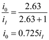
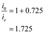
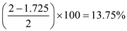
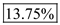
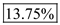
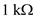
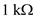
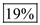
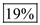

Refer to Figure 12.19 in the text book for the load circuit of the input stage of the 741 operational amplifier fed by the two complementary current signals.
The current gain for a resistor degenerated mirror is,
Substitute 1 for  .
.
Thus the current gain of the 741 operational amplifier is,
When the resistor  is short-circuited, the current gain is,
is short-circuited, the current gain is,
Substitute  for
for  and
and  for
for  .
.


Determine the reduction in the differential gain.

Thus, the differential gain is reduced when the resistor  is short-circuited and the reduction percentage is .
is short-circuited and the reduction percentage is .
 is short-circuited, the current gain is,
is short-circuited, the current gain is, and  for
and  for  .
. is short-circuited and the increment percentage is .
is short-circuited and the increment percentage is . and
and  are short-circuited, the current gain is,
are short-circuited, the current gain is, 
 and
and  are short-circuited.
are short-circuited.